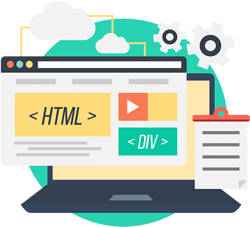

|
Product Transformation -- Frontend Foundation & Full-Stack Integration
|
Build a complete React frontend foundation integrated with the Spring Boot backend to support the product transformation workflow.
|

|
- React Router 6 with 8 routes, fixed sidebar layout, and reusable component library (Button, Card, Badge, Form, Table)
- 8 API service files aligned with real backend endpoints; Design System CSS variables integrated
- Full stack validated: Backend :8080 + Frontend :3000, 11/12 endpoints live, 25+ DB records
- 2 blockers fixed (Layout/Outlet routing, invented endpoint removed)
- Feedback: Good progress — FE foundation done (BE & DB done since Week 5–6). Next: Phase 7.3
- Next (Week 8): Phase 7.3 — real data fetching, forms, workflow integration, charts
|
|